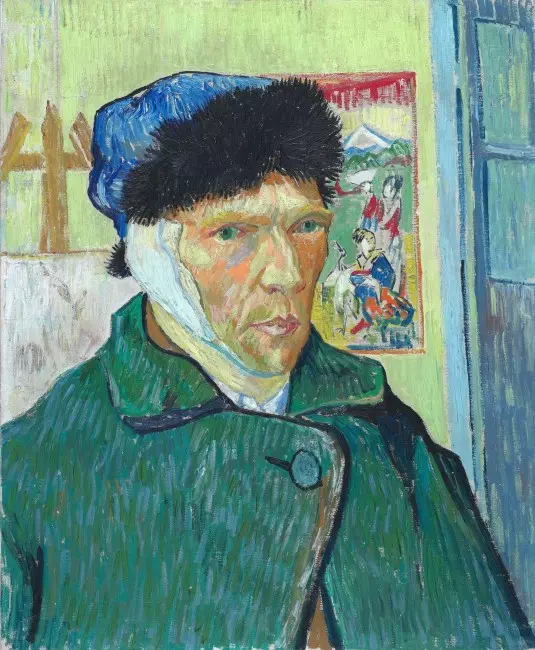

23 Aralık 1888 gecesi Arles’da, Place Lamartine’deki Sarı Ev’in içinde yaşananları doğrudan gören güvenilir bir tanık yoktu. Paul Gauguin evden ayrılmıştı; Vincent van Gogh birkaç saat sonra ağır kan kaybına yol açan bir kulak yarasıyla kaldı. Gece bitmeden kesilmiş kulak parçası kâğıda sarılarak yakındaki bir geneleve götürülecek, ertesi sabah polis ressamı yatağında neredeyse tepkisiz hâlde bulacak ve sanat tarihinin en çok tekrarlanan hikâyelerinden biri doğacaktı. Bugün bile anlatı çoğu zaman tek cümleye indirgenir: Van Gogh, Gauguin’le kavga ettikten sonra “delirdi” ve kulağını kesti. Fakat belgeler bu kadar basit bir hikâye anlatmaz.
O gecenin ana hatları güçlü kaynaklarla yeniden kurulabilirken en kritik dakikalar karanlıkta kalır. Gauguin’in yıllar sonra anlattıkları önemlidir, fakat tarafsız ve eşzamanlı bir kayıt değildir. Van Gogh ise krizden sonra olayın nedenini açıkça anlatmadı ve daha sonraki tıbbi kayıtlara göre yaşananları yalnızca bulanık biçimde hatırlıyordu. Kesilen parçanın büyüklüğü konusunda tanıklar onlarca yıl çelişti; kulağı teslim alan kadın uzun süre yalnızca “Rachel” diye bilindi; Gauguin’in kulağı bir kılıçla kesmiş olabileceği tezi ise 21. yüzyılda yeni bir tartışma yarattı. Bu nedenle “Van Gogh kulağını neden kesti?” sorusuna güvenilir bir cevap verebilmek için önce efsaneyi değil, Aralık 1888’de üst üste binen baskıları ve elimizdeki kanıtların sınırlarını görmek gerekir.
Arles, Sarı Ev ve Van Gogh’un “Güney Atölyesi” Hayali
Van Gogh Şubat 1888’de Paris’ten Arles’a geldiğinde yalnızca daha sıcak bir iklim aramıyordu. Güney Fransa’nın güçlü ışığı, renkleri ve kırsal manzarası ona yeni bir resim dili kurmak için uygun görünüyordu. Aynı yıl Place Lamartine’deki Sarı Ev’in bir bölümünü kiraladı; önce alt kattaki alanı atölye olarak kullandı, daha sonra üst katta yaşamaya başladı. Asıl hayali burayı tek başına çalışacağı bir ev olmaktan çıkarıp sanatçıların birlikte yaşayacağı ve üreteceği bir merkeze dönüştürmekti. Van Gogh Museum’un kullandığı anlatımla Arles’da bir sanatçı topluluğu kurmayı düşlüyordu; sonradan “Güney Atölyesi” olarak anılan düşüncenin merkezinde özellikle Paul Gauguin vardı.
Van Gogh, Gauguin’i aylar boyunca Arles’a gelmeye ikna etmeye çalıştı. Theo van Gogh hem Vincent’a maddi destek sağlıyor hem de Paris’te sanat ticaretiyle uğraşıyor, Gauguin’in eserleriyle de ilgileniyordu. Gauguin sonunda 23 Ekim 1888’de Arles’a ulaştı. Vincent onun için Sarı Ev’i hazırlamış, odasını dekore etmek amacıyla ünlü ayçiçeği resimleri üzerinde çalışmıştı. Başlangıçta iki ressam birlikte çalıştı, kafelere gitti, sanat üzerine uzun tartışmalar yaptı ve aynı çevreyi resmetti. Fakat bu ortaklık yalnızca iki güçlü kişiliğin aynı çatı altında yaşaması değildi; sanatın nasıl yapılması gerektiğine ilişkin temel bir ayrılık da içeriyordu.
Van Gogh gözünün önündeki doğayla doğrudan temas etmeyi, dışarıda çalışmayı ve gördüğünü yoğun renklerle yeniden kurmayı önemsiyordu. Gauguin ise belleğe, hayal gücüne ve zihinsel senteze daha fazla ağırlık veriyordu. Van Gogh Museum’un koleksiyon anlatımında da vurgulandığı gibi, Gauguin hayal gücünden çalışmaya yönelirken Van Gogh görünür gerçekliğe bağlı kalmayı sürdürüyordu. Birlikte çalışmaları verimliydi, fakat sanat tartışmaları giderek kişisel gerilimle iç içe geçti. Sarı Ev’e başka sanatçıların gelmemesi de Vincent’ın kolektif hayalini fiilen Gauguin’e bağımlı hâle getirdi.
Bu sırada Van Gogh’un yaşam koşulları kırılgandı. Resim malzemeleri ve günlük giderleri için büyük ölçüde Theo’nun gönderdiği paraya dayanıyordu. Çok yoğun çalışıyor, kimi dönemlerde düzensiz besleniyor ve mektuplarında sağlığıyla ilgili sorunlardan söz ediyordu. Alkol tüketimi, özellikle şarap ve absinthe, biyografik ve tıbbi değerlendirmelerde önemli bir etken olarak karşımıza çıkar. Bunların hiçbirini tek başına 23 Aralık gecesini açıklayan bir teşhise çevirmek doğru değildir; fakat yetersiz beslenme, uykusuzluk, ağır çalışma, alkol kullanımı, yalnızlık ve giderek bozulan Gauguin ilişkisi, krizden önceki fiziksel ve duygusal zeminin parçalarıydı.
Aralık ortasına gelindiğinde Van Gogh, Gauguin’in gitmeyi ciddi biçimde düşündüğünü biliyordu. Theo’ya 17 veya 18 Aralık’ta yazdığı 726 numaralı mektup, ortak yaşamın gerilimli hâlini açıkça gösterir. Vincent için mesele yalnızca bir ev arkadaşının ayrılması değildi. Gauguin’in gidişi, aylardır hazırladığı sanatçı topluluğu düşüncesinin çökmesi anlamına da geliyordu.
23 Aralık 1888 Gecesi: Van Gogh ve Gauguin Arasında Ne Oldu?
Olayın en meşhur sahnesi aynı zamanda en az güvenilir biçimde bildiğimiz bölümdür. Yaygın anlatıya göre 23 Aralık akşamı iki sanatçı yeniden tartıştı; Gauguin dışarı çıktı, Van Gogh onu açık bir usturayla takip etti, fakat saldırmadan geri döndü. Bu sahnenin temel kaynağı Gauguin’in yıllar sonra kaleme aldığı anılarıdır. Gauguin, Van Gogh’un kendisine doğru geldiğini, elinde ustura bulunduğunu ve kendisinin dönüp bakması üzerine Vincent’ın geri çekildiğini anlatır. Bu tanıklık göz ardı edilemez, çünkü Gauguin olayın merkezindeki kişidir; ancak anlatısını yaklaşık on beş yıl sonra yazmış olması ve kendi davranışını da açıklamak zorunda olan taraflardan biri olması nedeniyle ayrıntılarının bağımsız biçimde doğrulanması gerekir.
Van Gogh’un mektupları tartışmanın kesin nedenini açıklamaz. Üstelik olaydan hemen önce ilişkinin kırılma noktasında olduğu açıktır. Gauguin daha önce Theo’ya iki sanatçının mizaç uyuşmazlığı nedeniyle birlikte yaşamakta zorlandığını bildirmişti. Vincent da Gauguin’in Arles’dan ayrılma ihtimalini biliyordu. Dolayısıyla 23 Aralık’taki krizi yalnızca tek bir sözlü tartışmaya bağlamak yerine haftalardır biriken çatışmanın doruk noktası olarak görmek daha güvenlidir.
Theo’nun Jo Bonger ile ilişkisi de bu bağlamda sık sık gündeme gelir. Theo 21 Aralık’ta annesine evlilik planlarını bildirmişti. Vincent’ın haberi kulağını yaralamadan önce öğrenip öğrenmediği ise kesin değildir. Van Gogh Letters arşivi, Theo’nun Vincent’a nişanı ne zaman yazdığının bilinmediğini özellikle belirtir. Martin Bailey 2025’te, Vincent’ın 23 Aralık’ta Theo’dan aldığı artık kayıp olan mektubun nişan haberini içerme ihtimalinin yüksek olduğunu savundu; bu ilginç bir yorumdur, fakat kayıp mektubun içeriği bilinmediği için “Van Gogh kulağını Theo’nun evlilik haberini duyduğu için kesti” şeklinde kesinleştirilemez. Theo’nun evlenmesi, Vincent’ın hem duygusal hem maddi açıdan en önemli desteğini kaybetme korkusunu artırmış olabilir; mevcut belgeler bunun o geceki doğrudan tetikleyici olduğunu kanıtlamaz.
Gauguin o gece Sarı Ev’de kalmadı. Bundan sonraki kritik zaman aralığında güvenilir bir görgü tanığı yoktur. Van Gogh’un Sarı Ev’e döndükten sonra bir usturayla sol kulağını ağır biçimde yaraladığı, çağdaş kayıtlar ve onu tedavi eden kişiler temelinde kabul edilen olay örgüsüdür. Fakat usturayı eline aldığı anda zihninden ne geçtiğini, eylemin tam olarak nasıl gerçekleştiğini veya ne kadar sürdüğünü anlatan birinci elden bir kayıt bulunmaz.
Van Gogh Kulağını Nasıl Kesti ve Kulağının Tamamını mı Kesti?

Van Gogh’un yaraladığı kulak sol kulağıydı. Arles hastanesinin başhekimi Dr. Urpar’ın belediye başkanına gönderdiği 29 Aralık 1888 tarihli yazının günümüze ulaşan kopyasında, Vincent’ın 23 Aralık’ta kulağını usturayla çıkardığı ve ruhsal bir bozukluk yaşadığı belirtilir. Onu doğrudan tedavi eden genç hekim Dr. Félix Rey de olayın hemen sonrasındaki yazışmalarda kulağın kesilmesinden söz eder. Bu belgeler, eylemin temel çerçevesini olaydan onlarca yıl sonra oluşturulmuş popüler anlatılardan çok daha sağlam bir zemine oturtur.
Asıl tartışma ne kadarının kesildiğidir. Uzun yıllar boyunca Van Gogh’un yalnızca kulak memesini veya kulağının küçük bir bölümünü kestiği sıkça tekrarlandı. Bunun sebeplerinden biri sonraki tanıklıkların birbiriyle uyuşmamasıydı. Jo van Gogh-Bonger, Paul Signac ve Paul Gachet’nin oğlu gibi kişiler daha küçük bir yaralanmadan söz ederken, olaya yakın bazı Arles tanıkları “bütün kulak” ifadesini kullandı. Dönemin Le Forum Républicain gazetesi de “kulağını” verdiğini yazıyordu; fakat gündelik dilde bu ifade anatomik olarak dış kulağın yüzde yüzünün çıkarıldığı anlamına gelmek zorunda değildir.
Tartışmayı değiştiren belge, araştırmacı Bernadette Murphy’nin ortaya çıkardığı ve Dr. Félix Rey’in 18 Ağustos 1930’da Amerikalı yazar Irving Stone için hazırladığı not ile çizim oldu. Rey, Van Gogh’un yarasını bizzat tedavi etmişti ve çizimi, dış kulağın çok büyük bölümünün kesildiğini gösteriyordu. Van Gogh Museum’un mektup edisyonunun açıklamaları bu kanıtı esas alarak Van Gogh’un tüm kulağını kestiği sonucuna varır; Courtauld Gallery ise daha temkinli biçimde “sol kulağının çoğunu” kestiğini söyler. Rey’in çizimi olaydan yaklaşık 42 yıl sonra hazırlanmış olduğundan, anatomik bir ameliyat kaydı kadar kusursuz kabul edilmemelidir. Yine de “yalnızca kulak memesini kesti” şeklindeki eski popüler anlatı artık eldeki en güçlü kanıtlarla uyuşmaz. En güvenli ifade, Van Gogh’un sol dış kulağının çok büyük kısmını kestiğidir.
Peki neden bazı otoportrelerde bandaj sağ kulaktaymış gibi görünür? Çünkü Van Gogh kendisini aynadan resmetti. Ocak 1889 tarihli Kulağı Sargılı Otoportrede görüntü ayna yönünü koruduğu için gerçek hayatta yaralanmış olan sol kulak, resimde izleyicinin karşısında diğer taraftaymış gibi algılanır. Bu bir anatomik hata veya “yanlış kulağı resmetti” bilmecesi değildir.
Van Gogh Kesilen Kulağını Kime Verdi?
Yaralanmadan sonra olanlar hikâyeyi daha da sıra dışı hâle getirir. Le Forum Républicain gazetesinin 30 Aralık 1888 tarihli yerel haberine göre Van Gogh, 23 Aralık gecesi saat 23.30 civarında bir geneleve gitti, “Rachel” adlı bir kadını istedi ve sarılı kulağı ona verdi. Gazete kadına söylediği bir cümleyi de aktarır; fakat bu sözleri Van Gogh’un ağzından kaydedilmiş doğrulanmış bir ifade gibi kullanmak doğru olmaz. Olayın farklı sonraki anlatımları vardır ve gazete haberi de doğrudan stenografik tutanak değildir.
“Rachel”ın kimliği uzun süre belirsiz kaldı ve popüler kültürde kadın çoğu kez Van Gogh’un sevgilisi olan bir seks işçisi şeklinde anlatıldı. 2016’da Bernadette Murphy’nin arşiv araştırması ve ardından The Art Newspaper’ın açık arşivlerde yaptığı takip, genç kadının Gabrielle Berlatier olduğunu güçlü biçimde ortaya koydu. Institut Pasteur kayıtları Gabrielle’in 1888’in başlarında kuduz bir köpek tarafından ısırıldığını ve Paris’te yeni geliştirilen kuduz aşısıyla tedavi edildiğini gösteriyordu. Araştırmaya göre 18 yaşındaki Gabrielle, ailesinin tedavi masrafları nedeniyle yaşadığı mali yükün ardından Arles çevresinde çalışıyordu ve genelevde kayıtlı bir seks işçisinden ziyade hizmetçi/temizlikçi olarak bulunuyordu.
Burada küçük ama önemli bir ayrım vardır. Çağdaş gazete haberi alıcıyı “Rachel” diye adlandırırken daha sonraki araştırma Gabrielle Berlatier’i olayın kadını olarak tanımlar. “Rachel”ın Gabrielle tarafından kullanılan bir ad olup olmadığı veya ilk kayıtların ismi nasıl kullandığı konusunda her ayrıntı aynı güçte belgelenmiş değildir. Bu nedenle Rachel ve Gabrielle meselesini hiçbir belirsizlik kalmamış basit bir isim değişikliği gibi anlatmak yerine, çağdaş kaydın “Rachel” dediğini ve modern arşiv araştırmasının Gabrielle Berlatier’i güçlü biçimde belirlediğini söylemek daha doğrudur.
Bundan daha önemlisi, “Van Gogh kulağını sevgilisine romantik hediye olarak gönderdi” anlatısının güvenilir olmamasıdır. Gabrielle’in Van Gogh’un sevgilisi olduğunu kanıtlayan belge yoktur. Kulağın neden özellikle ona verildiğini de bilmiyoruz. Eylemi aşk ilanı veya sembolik bir sanat performansı gibi açıklamaya çalışan teoriler üretilmiştir; bunların hiçbiri doğrudan kanıtla doğrulanmış değildir.
Ertesi Sabah: Polis, Hastane ve Theo’nun Arles’a Gelişi
24 Aralık sabahı polis Sarı Ev’e gittiğinde Van Gogh’u yatağında ağır durumda buldu. Le Forum Républicain haberi onun neredeyse yaşam belirtisi göstermediğini yazar. Ressam Arles’daki hastaneye acilen götürüldü ve Dr. Félix Rey tarafından tedavi edildi. Olayın fiziksel ağırlığı kadar ruhsal durumu da hekimleri kaygılandırıyordu. 29 Aralık’ta Dr. Urpar’ın hazırladığı belgede özel bir kuruma yatırılması düşünülüyordu; birkaç gün içinde durumu düzelince bu plan geçici olarak geri çekildi.
Gauguin, Theo’ya telgraf göndererek durumu bildirdi. Theo hemen Paris’ten yola çıktı ve 25 Aralık sabahı Arles’a ulaştı. Vincent’ı hastanede fiziksel olarak zayıf ve zihinsel olarak karışık durumda gördü. Theo 25 Aralık’ta Paris’e döndü; Gauguin de onunla birlikte Arles’dan ayrıldı. Vincent ile Gauguin bir daha yüz yüze görüşmedi.
Van Gogh’un 2 Ocak 1889’da hastaneden Theo’ya yazdığı 728 numaralı mektup, olay sonrasındaki en değerli belgelerden biridir. Vincent mektupta Gauguin’i korkutup korkutmadığını soruyor, neden kendisine haber vermediğini merak ediyor ve hâlâ onu düşündüğünü söylüyordu. Aynı sayfaya Dr. Rey de Theo’yu rahatlatan bir not ekledi. Rey’in 30 Aralık’ta Theo’ya aktardığına göre doktor, kulağını kesmesine yol açan nedeni sorduğunda Vincent bunun “tamamen kişisel bir mesele” olduğunu söylemişti.
Daha sonra Saint-Rémy’de Dr. Théophile Peyron’un 8 Mayıs 1889 tarihli kaydı daha da dikkat çekicidir: Van Gogh’un o krize ilişkin yalnızca çok belirsiz bir anısı bulunduğunu belirtir. Bu bilgi, olaydan sonraki sessizliği otomatik olarak gizli bir anlaşmanın kanıtı saymamamız gerektiğini gösterir. Vincent gerçekten de yaşadıklarının bir bölümünü hatırlamıyor olabilir.
Van Gogh Kulağını Neden Kesti?
Buraya kadar belgeler olayın nasıl geliştiğine ilişkin bir çerçeve kuruyor; fakat “neden?” sorusunun tek bir belgelenmiş cevabı yok. Van Gogh bir mektuba “şu sebeple kulağımı kestim” yazmadı. Dr. Rey’e verdiği cevap kişisel meseleden öteye gitmedi; daha sonraki tıbbi kayıtlar hafızasının bulanık olduğunu düşündürüyor. Bu nedenle en sağlam yaklaşım, tek bir dramatik sebep seçmek yerine Aralık 1888’de aynı anda etkili olan risk ve stres etkenlerini birlikte değerlendirmektir.
En yakın tetikleyici, Gauguin ile ilişkinin çöküşü gibi görünür. Van Gogh Sarı Ev’i bir sanatçı topluluğunun başlangıcı olarak hayal etmiş, Gauguin’in gelişine büyük umut bağlamıştı. İki ay sonra hem kişisel hem sanatsal anlaşmazlıklar ortak yaşamı sürdürülemez hâle getiriyordu. Gauguin’in ayrılması, Vincent için yalnızca bir arkadaşın gidişi değil, geleceğine bağladığı projenin dağılmasıydı. Terk edilme veya yalnız kalma korkusunun ne ölçüde rol oynadığını doğrudan ölçemeyiz; fakat mektuplar Gauguin’in kalıp kalmayacağı konusunun Vincent’ı olaydan hemen önce meşgul ettiğini açıkça gösterir.
Buna Theo ile ilişkisindeki kırılganlık ekleniyordu. Vincent maddi açıdan kardeşine bağımlıydı ve Theo onun en önemli sırdaşıydı. Theo’nun Jo Bonger ile evlenme kararı, Vincent için kardeşinin mutluluğu ile kendi geleceğine ilişkin kaygıyı aynı anda doğurmuş olabilir. Ancak nişan haberinin 23 Aralık’taki krizi doğrudan başlattığı iddiası kanıtlanmış değildir; Van Gogh Letters edisyonu Theo’nun haberi Vincent’a ne zaman yazdığının bilinmediğini belirtir. Bu yüzden Theo’nun evliliği, olası psikososyal baskılardan biri olarak ele alınabilir ama kesin “sebep” yapılamaz.
Van Gogh’un fiziksel koşulları da göz ardı edilemez. Yoğun çalışma, düzensiz beslenme, uykusuzluk ve yüksek alkol tüketimi hakkındaki biyografik kanıtlar, zaten kırılgan bir dönemde bedenin ve zihnin dayanıklılığını azaltmış olabilir. 2020’de yayımlanan disiplinler arası psikiyatri değerlendirmesi, ağır alkol kullanımını, yetersiz beslenmeyi ve artan psikososyal gerilimi kriz bağlamında önemli unsurlar olarak değerlendirir. Aynı çalışma olası bir duygu durum bozukluğu ve başka psikiyatrik kırılganlıklar üzerinde durur; fakat tarihsel bir kişiye bugünün ölçütleriyle kesin teşhis koymanın sınırları da açıktır.
Van Gogh için yıllar boyunca epilepsi, temporal lob epilepsisi, bipolar bozukluk, psikoz, borderline kişilik örüntüsü, alkol kullanım bozukluğu veya yoksunluğu, Ménière hastalığı, porfiri ve başka pek çok açıklama önerildi. Sorun, aynı mektup ve tanıklıkların farklı tıbbi modellerle farklı biçimde yorumlanabilmesidir. Bazı araştırmacılar Ménière hastalığını savunmuş, başkaları aynı hipotezi reddederek epileptik tablolar üzerinde durmuş, daha yakın tarihli uzman değerlendirmeleri ise tek bir hastalık yerine birden fazla etkenin birlikte bulunmuş olabileceğini öne sürmüştür. Hastayı muayene edemediğimiz, modern laboratuvar verilerine sahip olmadığımız ve 19. yüzyıl tıbbi kayıtları sınırlı olduğu için “Van Gogh’un hastalığı kesinlikle şuydu” demek bilimsel olarak savunulamaz.
Buna rağmen olayın bir akut ruhsal kriz sırasında gerçekleştiği konusunda güçlü kanıt vardır. Olaydan hemen sonra onu gören hekimler zihinsel bozukluk kaydetti; sonraki aylarda da tekrarlayan ağır krizler yaşadı. Fakat “Van Gogh bir anda hiçbir neden yokken delirdi” ifadesi hem tarihsel olarak yetersiz hem de ruh sağlığını karikatürleştiren bir açıklamadır. Aynı şekilde “aşk yüzünden kulağını kesti” veya “dâhiliğinin bedeli buydu” gibi formüller de karmaşık bir krizi romantik efsaneye çevirir. Sanatsal yetenek, kendine zarar vermenin sonucu değildir.
Dolayısıyla Van Gogh’un kulağını neden kestiğine verilebilecek en dengeli cevap şudur: Eylem, Gauguin ile ortaklığın çökmesi ve onun ayrılma ihtimaliyle keskinleşen; yalnızlık, maddi ve duygusal bağımlılık, yoğun çalışma, uyku ve beslenme sorunları, alkol kullanımı ve altında yatan sağlık sorunlarının eşlik etmiş olabileceği ağır bir akut kriz sırasında gerçekleşti. Bu etkenlerden hangisinin belirleyici olduğunu kesin olarak bilmiyoruz.
Van Gogh’un Kulağını Gauguin mi Kesti?
2008–2009’da Alman araştırmacılar Hans Kaufmann ve Rita Wildegans, yerleşik anlatıyı tersine çeviren bir teori ortaya attı. Onlara göre Van Gogh kulağını kendisi kesmemiş olabilir; Gauguin, iki sanatçı arasındaki bir çatışma sırasında taşıdığı kılıçla Vincent’ın kulağını yaralamış, ardından ikisi olayı gizlemek üzere sessiz kalmış olabilirdi. Teori dünya basınında büyük ilgi gördü çünkü sanat tarihinin en meşhur kendine zarar verme hikâyesini bir düelloya veya kazaya dönüştürüyordu.
Kaufmann ve Wildegans, Gauguin’in eskrimle ilgilenmesini ve silah taşıdığına ilişkin anlatıları, olayın güvenilir bir görgü tanığının bulunmamasını, Gauguin’in yıllar sonra yazdığı hikâyedeki sorunları ve Van Gogh’un sonraki mektuplarında Gauguin’e karşı suçlayıcı olmamasını birlikte yorumladı. Van Gogh’un Gauguin’in “silahlı” olmamasına ilişkin sonraki ifadeleri de teorinin destekçileri tarafından imalı bulunmuştur. Onlara göre Gauguin kazara veya kendini savunurken yaralamış, Vincent ise arkadaşını cezadan korumak için gerçeği söylememiş olabilirdi.
Bununla birlikte bu tez doğrudan fiziksel kanıtla desteklenmez. Gauguin’in kılıcının yarayı oluşturduğunu gösteren adli kayıt yoktur; olay yerini gören bağımsız bir tanık yoktur; Van Gogh’un “Gauguin kulağımı kesti” dediği bir belge yoktur ve iki sanatçının sessizlik anlaşması yaptığına dair çağdaş kayıt bulunmaz. Buna karşılık olaydan hemen sonraki Arles tıbbi belgeleri ve polis çevresindeki anlatılar Van Gogh’un usturayla kendi kulağını kestiği çerçevesini destekler. Van Gogh Museum da kendine zarar verme anlatısını kabul etmeyi sürdürür.
Teori özellikle Gauguin’in geç tarihli anlatısının sorgulanmasını ve olayın görgü tanığı olmayan kısmını hatırlatması bakımından yararlıdır. Fakat “Van Gogh’un kulağını aslında Gauguin kesti” şeklinde kesin gerçek olarak sunulamaz. Mevcut kanıt dengesi Van Gogh’un kendi kulağını yaraladığı yönündedir; Gauguin’in kılıç teorisi ise ilgi çekici fakat kanıtlanmamış bir azınlık görüşüdür.
Van Gogh Olayı Neden Açıklamadı?
Van Gogh’un sessizliği, özellikle Gauguin teorisinin ortaya çıkmasından sonra şüpheli bir davranış gibi yorumlandı. Oysa 2 Ocak tarihli mektubunda Vincent’ın Gauguin’i korkutup korkutmadığını sorması ve onun hâlâ kendisini düşündüğünü belirtmesi, olayın zihninde açık bir kronoloji hâlinde bulunmadığını düşündürebilir. Dr. Rey’e neden konusunda yalnızca “kişisel mesele” demesi de ayrıntılı bir itiraf değildir.
Saint-Rémy’deki tıbbi kaydın Van Gogh’un kriz hakkında yalnızca belirsiz bir hatıraya sahip olduğunu söylemesi burada özellikle önemlidir. Akut bilinç bozukluğu veya ağır kriz sırasında yaşananların parçalı hatırlanması mümkündür. Bunun hangi modern tanıyla açıklanması gerektiğini kesinleştiremeyiz; ancak unutkanlığın kendisi, “Gauguin’i korumak için sustu” sonucuna zorunlu olarak götürmez. Sessizlik utanma, kafa karışıklığı, mahremiyet isteği veya gerçekten hatırlayamama ile de açıklanabilir. Belgeler bunlardan birini kesin olarak seçmemize izin vermez.
Kulağı Sargılı Otoportreler Olayı Nasıl Anlatıyor?
Van Gogh hastaneden çıktıktan kısa süre sonra yeniden resme döndü ve Ocak 1889’da bandajlı hâlini iki otoportrede ele aldı. Bunlardan bugün Londra’daki Courtauld Gallery’de bulunan Self-Portrait with Bandaged Ear, sanatçıyı kalın bandaj, yeşil palto ve kürklü şapkayla gösterir. Arkasında bir şövale ile Japon baskısı vardır. Kürklü şapka yalnızca dramatik bir aksesuar değildir; Courtauld’un açıklamasına göre kış soğuğuna karşı koruma sağlarken kalın bandajı da yerinde tutuyordu.
Resmin en çok sorulan ayrıntısı kulağın yönüdür. Van Gogh sol kulağını yaralamıştı, ancak aynaya bakarak çalıştığı için resimde bandaj karşı taraftaymış gibi görünür. Bu durum olayın sağ kulakta gerçekleştiğini kanıtlamaz. Aynı şekilde otoportreyi yalnızca “deliliğin resmi” olarak okumak da eserin sanat tarihsel içeriğini daraltır. Arkadaki Japon ukiyo-e baskısı Van Gogh’un Japon sanatına duyduğu yoğun ilgiyi gösterir; şövale ise hastaneden çıkışının hemen ardından çalışmaya yeniden başlamasını vurgular. Yeşiller, sarılar, kırmızılar ve turuncular arasındaki kontrollü karşıtlık, ressamın renk düşüncesinin kriz sonrasında ortadan kalkmadığını açıkça gösterir.
İkinci bandajlı otoportre, genellikle Pipo ile Kulağı Sargılı Otoportre adıyla anılır ve Van Gogh’u daha sade bir arka plan önünde pipo içerken gösterir. İki resim birlikte düşünüldüğünde sanatçı yarasını gizlememiş, fakat onu sansasyonel kan ve şiddet görüntüsüne de dönüştürmemiştir. Kendisini bandajlı, giyinik ve çalışmaya devam eden bir ressam olarak kaydetmiştir. Bu eserleri “acı çekti ve bu yüzden büyük sanat yaptı” biçimindeki romantik denkleme indirgemek doğru değildir.
Arles’dan Saint-Rémy’ye: Krizden Sonra Ne Oldu?
Ocak başında Sarı Ev’e dönen Van Gogh’un iyileşmesi kalıcı olmadı. Şubat 1889’da yeniden kriz geçirdi ve hastaneye yatırıldı. Arles’daki bazı komşular onun davranışlarından endişe duyarak yetkililere dilekçe verdi; bu süreç Sarı Ev’de bağımsız yaşamını giderek zorlaştırdı. Mayıs 1889’da Van Gogh kendi isteğiyle Saint-Rémy-de-Provence’daki Saint-Paul-de-Mausole kurumuna girdi. Burada yaklaşık bir yıl kaldı; daha sakin dönemlerde resim yapmayı sürdürdü, fakat yeni ağır krizler de yaşadı.
Saint-Rémy dönemi Van Gogh’un sanatında son derece üretkendi, ancak bunun hastalığın sanatına “iyi geldiği” anlamına geldiğini söylemek yanlış olur. Krizler onu haftalarca çalışamaz hâle getirebiliyor, korku ve belirsizlik yaratıyordu. Resim yapmak ise mektuplarından anlaşıldığı kadarıyla düzen, amaç ve kimlik duygusunu korumasına yardım eden temel faaliyetlerden biriydi. 1890 baharında Saint-Rémy’den ayrılarak Paris yakınlarındaki Auvers-sur-Oise’a geçti ve Dr. Paul Gachet’nin gözetiminde çalışmayı sürdürdü. 27 Temmuz 1890’da ateşli silahla ağır yaralandı ve 29 Temmuz’da, 37 yaşında öldü.
Kulak olayı bu son iki yılın başlangıcındaki büyük kırılmadır, fakat Van Gogh’un bütün kişiliğini açıklayan anahtar değildir. O, Aralık 1888’den önce de olağanüstü üretken ve yenilikçi bir ressamdı; sonrasında da yalnızca hastalığının “ürünü” hâline gelmedi. Kulağın hikâyesinin bu kadar ünlü olması, bazen resimlerinin arkasındaki bilinçli çalışma, sanat tartışmaları ve teknik arayışları gölgede bırakır.
Van Gogh’un Kulağı Hakkındaki Efsaneler ve Kanıtlar
“Van Gogh yalnızca kulak memesini kesti” iddiası artık güçlü kanıtlarla uyuşmuyor. Geçmişte bazı tanıklar küçük bir parçadan söz ettiği için bu anlatı yaygınlaşmıştı; fakat yarayı tedavi eden Dr. Félix Rey’in yaklaşık 42 yıl sonra çizdiği şema ve olay çevresindeki diğer kayıtlar dış kulağın çok büyük kısmının kesildiğini düşündürüyor. Buna karşılık gündelik dilde “kulağının tamamını kesti” demek de anatomik ayrıntıyı gereğinden fazla kesinleştirebilir. “Sol dış kulağının büyük bölümünü kesti” ifadesi, kanıtların niteliğini en güvenli biçimde yansıtır.
“Kulağını sevgilisine hediye etti” iddiasında da iki ayrı varsayım birbirine eklenmiştir. Van Gogh’un kesilen parçayı bir kadına götürdüğü çağdaş gazete haberiyle desteklenir; fakat kadının sevgilisi olduğuna dair güvenilir kanıt yoktur. “Rachel” adı çağdaş haberde geçerken modern arşiv araştırması Gabrielle Berlatier’i güçlü biçimde tanımlamıştır. Olayı romantik bir aşk jesti olarak sunmak, elimizdeki belgelerin söylemediği bir niyet eklemektir.
“Gauguin kulağını kesti” iddiası ise tamamen uydurma bir internet efsanesi değildir; Kaufmann ve Wildegans tarafından kaynaklar yeniden yorumlanarak geliştirilmiş ciddi ama tartışmalı bir tezdir. Sorun, teorinin doğrudan kanıtının bulunmamasıdır. Ana akım kurumsal Van Gogh araştırması hâlâ kendine zarar verme açıklamasını daha güçlü kabul eder.
“Theo’nun evlilik haberini alınca kulağını kesti” düşüncesi de kesinleştirilemez. Theo’nun nişan süreci olayla aynı günlere denk gelir ve Vincent’ın kardeşine bağımlılığı nedeniyle psikolojik açıdan anlamlı olabilir. Fakat kayıp mektubun içeriğini bilmiyoruz. Bu nedenle nişan haberi olası bir ek baskı olarak tartışılabilir, tek neden olarak değil.
Son olarak Kulağı Sargılı Otoportrede “yanlış kulak” yoktur. Yaralanma sol kulaktaydı; aynadan yapılan otoportre görüntüyü ters çevirdi. Basit bir optik gerçek, yıllar içinde olayın kendisi kadar kalıcı bir bilmeceye dönüşmüştür.
Van Gogh Kulağını Neden Kesti? Kanıtların İzin Verdiği Sonuç
23 Aralık 1888 gecesinde yaşananların tamamını hiçbir zaman bilemeyebiliriz. Olayın kritik dakikalarını gören bağımsız tanık yoktur; Gauguin’in anlatısı geç tarihlidir; Van Gogh ayrıntılı bir açıklama bırakmamış ve sonraki tıbbi kayıtlara göre krizi bulanık hatırlamıştır. Buna rağmen temel çerçeve oldukça güçlüdür: Van Gogh, Gauguin ile ilişkilerinin ağır biçimde bozulduğu bir dönemde akut bir kriz yaşadı ve sol dış kulağının büyük bölümünü usturayla yaraladı. Ardından kesilen parçayı Arles’daki bir genelev çevresindeki genç bir kadına götürdü ve ertesi sabah hastaneye kaldırıldı.
Van Gogh kulağını neden kesti sorusunun tek kelimelik cevabı yoktur. Gauguin’in gitme ihtimali ve ortak sanatçı evi hayalinin çöküşü en yakın psikolojik baskılardan biriydi. Buna yalnızlık, Theo’ya maddi ve duygusal bağımlılık, yoğun çalışma, düzensiz yaşam, alkol kullanımı ve altında yatan fakat bugün kesin teşhis edemediğimiz sağlık sorunları eşlik ediyordu. Theo’nun nişan haberi de olası bir ek etken olabilir, ancak zamanlaması kesin değildir. Gauguin’in kılıçla kulağı kestiği alternatif teori ise doğrudan kanıt yetersizliği nedeniyle yerleşik açıklamanın yerini almamıştır.
Gerçeğe en çok yaklaştığımız yer, “deli dâhi kulağını kesti” efsanesinden uzaklaştığımız yerdir. Van Gogh’un yaşadığı kriz ne sanatının sırrıydı ne de dehasının bedeli. Belgelerin gösterdiği, ağır bir sağlık krizi yaşayan, ilişkileri ve yaşam koşulları baskı altında olan gerçek bir insanın kendine ciddi biçimde zarar verdiğidir. O gecenin bütün ayrıntıları kayıp olabilir; fakat kanıtlanmış olanı efsaneden ayırdığımızda hikâye daha az çarpıcı değil, çok daha insani hâle gelir.
Van Gogh’un Kulağı Hakkında Sıkça Sorulan Sorular
Van Gogh kulağını neden kesti?
Kesin tek bir neden bilinmiyor. Olay, Gauguin ile ilişkisinin çökmesi ve onun Arles’dan ayrılma ihtimaliyle keskinleşen ağır bir akut kriz sırasında gerçekleşti. Yalnızlık, Theo’ya bağımlılık, yoğun çalışma, düzensiz beslenme ve uyku, alkol kullanımı ve olası sağlık sorunları da krizin bağlamındaki etkenlerdi.
Van Gogh hangi kulağını kesti?
Van Gogh sol kulağını yaraladı. Bandajın bazı otoportrelerde diğer tarafta görünmesi, ressamın kendisini aynadan resmetmesinden kaynaklanır.
Van Gogh kulağının tamamını mı kesti?
Uzun süre yalnızca kulak memesini kestiği söylendi. Dr. Félix Rey’in olaydan yaklaşık 42 yıl sonra hazırladığı çizim ve diğer kayıtlar dış kulağın çok büyük kısmının kesildiğini destekliyor. Anatomik açıdan en temkinli ifade, sol dış kulağının büyük bölümünü kestiğidir.
Van Gogh kulağını kime verdi?
1888 tarihli yerel gazete haberi kadını “Rachel” diye adlandırır. Modern arşiv araştırmaları alıcının Gabrielle Berlatier adlı genç kadın olduğunu güçlü biçimde desteklemiştir; ancak “Rachel” adının Gabrielle’in takma adı olduğunu kesin olarak söylemek için eldeki kanıtlar yeterli değildir.
Van Gogh kulağını sevgilisine mi verdi?
Bunu destekleyen güvenilir kanıt yoktur. Kulağı bir kadına teslim ettiği belgelenmiştir, ancak Gabrielle Berlatier’in Van Gogh’un sevgilisi olduğu veya eylemin romantik bir hediye olarak tasarlandığı kanıtlanmış değildir.
Van Gogh’un kulağını Gauguin mi kesti?
Hans Kaufmann ve Rita Wildegans, Gauguin’in kılıçla kulağı yaralamış olabileceğini öne sürdü. Ancak bunu doğrulayan görgü tanığı, adli kanıt veya çağdaş itiraf bulunmadığından teori genel kabul görmüş bir gerçek değildir. Mevcut kanıtların ağırlığı Van Gogh’un kendini usturayla yaraladığı yönündedir.
Van Gogh kulağını kestiğinde kaç yaşındaydı?
Van Gogh 30 Mart 1853’te doğdu ve kulak olayı 23 Aralık 1888’de gerçekleşti. Bu nedenle olay sırasında 35 yaşındaydı.
Van Gogh’un hastalığı neydi?
Kesin olarak bilinmiyor. Yaşamı boyunca ve ölümünden sonra epilepsi, duygu durum bozuklukları, psikoz, alkolle ilişkili sorunlar, temporal lob epilepsisi, Ménière hastalığı ve başka teşhisler önerildi. Tarihsel belgeler modern anlamda kesin bir tanı koymaya yeterli değildir.
Van Gogh kulağını kestikten sonra ne oldu?
Ertesi sabah polis tarafından ağır durumda bulundu ve Arles hastanesine kaldırıldı. Bir süre iyileşse de 1889’da tekrarlayan krizler yaşadı ve Mayıs ayında kendi isteğiyle Saint-Rémy’deki Saint-Paul-de-Mausole kurumuna yattı. Resim yapmayı mümkün olduğu dönemlerde sürdürdü.
Kulağı Sargılı Otoportre’de neden diğer kulak yaralı görünür?
Van Gogh otoportresini aynaya bakarak yaptığı için görüntü sağ-sol yönünde ters görünür. Gerçekte yaralanan kulak sol kulaktı; resimdeki görünüm ayna etkisinin sonucudur.
Kaynakça
Vincent van Gogh Letters, Van Gogh Museum & Huygens ING, Letter 728: Vincent van Gogh and Félix Rey to Theo van Gogh, Arles, 2 Ocak 1889. Mektup 728
Vincent van Gogh Letters, Letter 726: Vincent van Gogh to Theo van Gogh, Arles, 17 veya 18 Aralık 1888. Mektup 726
Van Gogh Museum, “Van Gogh’s Illness”. Van Gogh’s Illness
Van Gogh Museum, Paul Gauguin – Vincent van Gogh Painting Sunflowers, Contemporaries of Van Gogh catalogue. Van Gogh Museum katalog kaydı
The Courtauld Gallery, Self-Portrait with Bandaged Ear, 1889. Eser kaydı
Murphy, Bernadette, Van Gogh’s Ear: The True Story. Chatto & Windus, 2016.
Bailey, Martin, “Did Van Gogh cut off his whole ear? Or only a part?”, The Art Newspaper, 17 Nisan 2020. Makale
Bailey, Martin, “Name of mystery woman who received Van Gogh’s ear revealed for first time”, The Art Newspaper, 19 Temmuz 2016. Makale
Nolen, Willem A. ve diğerleri, “New vision on the mental problems of Vincent van Gogh; results from a bottom-up approach using (semi-)structured diagnostic interviews”, Tijdschrift voor Psychiatrie, 2020, PMID 33135101. PubMed kaydı
Hughes, J. R., “A reappraisal of the possible seizures of Vincent van Gogh”, Epilepsy & Behavior, 2005, PMID 15907745. PubMed kaydı
Kaufmann, Hans; Wildegans, Rita, Van Goghs Ohr: Paul Gauguin und der Pakt des Schweigens. Osburg Verlag, 2008.
Bailey, Martin, “Was Van Gogh’s mutilation of his ear connected to his brother’s engagement?”, The Art Newspaper, 11 Nisan 2025. Makale